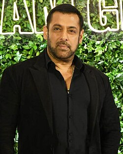

wikipedia says: Salman Khan[a] (pronounced [səlˈmaːn xaːn] ⓘ; born 27 December 1965) is an Indian actor, film producer, and television personality who works primarily in Hindi cinema. In a career spanning over three decades, his awards include two National Film Awards as a film producer, and two Filmfare Awards as an actor.
read more